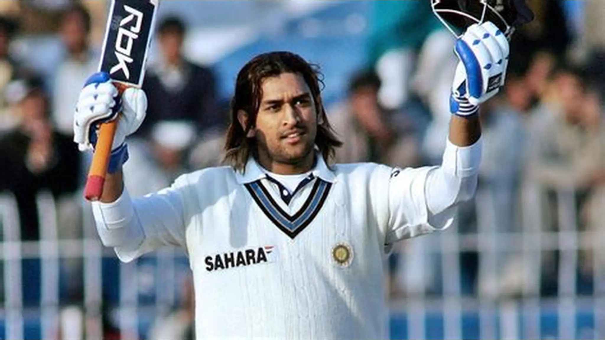
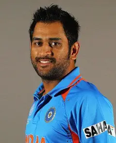
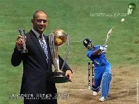
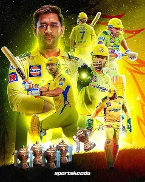
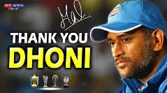

Mahendra Singh Dhoni, often called "Captain Cool," is a legendary Indian cricketer and leader. Born on July 7, 1981, in Ranchi, Jharkhand (formerly Bihar), Dhoni grew up in a modest home. His father, Pan Singh, worked in MECON, a public sector unit, while his mother, Devaki Devi, was a homemaker. Dhoni initially played football as a goalkeeper but was encouraged by his school sports teacher to try wicketkeeping, which led to his extraordinary journey in cricket. He played domestic cricket for Bihar and later for Jharkhand, showcasing his powerful batting and wicketkeeping skills.

In 2007, MS Dhoni took on the captaincy of the Indian cricket team, leading them to unprecedented success. Under his leadership, India won the ICC World Twenty20, marking a significant milestone in Indian cricket history. Dhoni's calm demeanor and strategic decisions were pivotal in the team's success, as they whitewashed Australia in a Test series and clinched the World Cup. His contributions to the team and the sport have left an indelible mark on Indian cricket and his legacy continues to inspire future generations of cricketers.

Mahendra Singh Dhoni's legacy as a successful winning captain is unparalleled in Indian cricket history. His calm demeanor, strategic acumen, and leadership skills have made him a role model for aspiring cricketers and a global icon. Dhoni's journey from a small-town boy to an international cricket star is a testament to his hard work, dedication, and smart decisions. His achievements include leading India to victory in the 2007 ICC T20 World Cup, the 2011 Cricket World Cup, and the 2013 ICC Champions Trophy, making him the only captain to win all three major ICC trophies. Dhoni's influence extends beyond cricket, as he continues to inspire others through his contributions to sports and leadership. His legacy is a reminder of the importance of perseverance, hard work, and staying composed in challenging situations.

MS Dhoni, born on July 7, 1981, in Ranchi, Jharkhand, is a legendary Indian cricketer and the captain of Chennai Super Kings (CSK) in the Indian Premier League (IPL). Under his leadership, CSK has become one of the most successful franchises in IPL history, winning the title five times (2010, 2011, 2018, 2021, and 2023) and sharing it with Rohit Sharma. Dhoni's journey from a railway ticket collector to a cricketing icon is marked by his exceptional skills as a wicketkeeper-batsman and his calm demeanor under pressure. He has captained India in various formats and won multiple ICC tournaments, including the T20 World Cup and the World Cup in 2011. Dhoni's legacy in cricket is unparalleled, and he continues to inspire future generations with his dedication and leadership.

MS Dhoni, the legendary Indian cricketer and captain, has recently addressed the topic of his retirement. The former Chennai Super Kings captain, who stepped away from international cricket after the ODI World Cup 2019, has opened up about his retirement. Dhoni, who retired from international cricket in 2020, has expressed a desire to enjoy the last few years of his cricket career, similar to how he enjoyed playing cricket as a child. He has played in a reduced capacity and continues to lead the Chennai Super Kings in the IPL. Dhoni's retirement marks the end of an era for Indian cricket, as he has been a key player in the country's cricketing success.